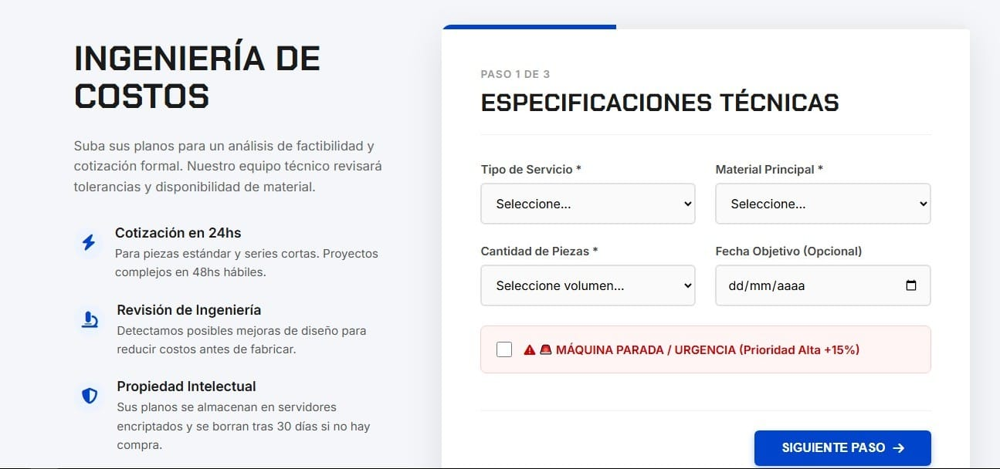

Guía Completa: Cómo automatizar la generación de leads en una metalúrgica paso a paso
Si tenés una metalúrgica, probablemente tu web sea como un folleto digital: linda, pero no vende. Peor aún: te llegan consultas genéricas como "¿cuánto cuesta?" que tu equipo pierde horas tratando de clasificar. ¿Te suena?
En esta guía te voy a mostrar, paso a paso, cómo convertir tu página web en una máquina de leads calificados trabajando en automático para tu equipo de ventas. Sin humo y con ejemplos reales pensados específicamente para el sector industrial B2B.
Paso 1: Definí qué es un "lead calificado" para tu industria
Antes de instalar cualquier tecnología o automatizar procesos, tenés que tener muy en claro qué tipo de cliente querés que te llegue. En la industria metalúrgica, no todas las consultas valen lo mismo:
- ❌ Un lead NO calificado es: "Hola, ¿me pasan precio de una caldera?" (Cero datos técnicos, cero contexto).
- ✅ Un lead SÍ calificado es: "Necesito una caldera para 10.000 kg/hora, con combustible biomasa, para la industria alimenticia en Córdoba. Mi nombre es Martín y mi teléfono es..."
💡 Acción concreta: Sentate hoy mismo con tu equipo comercial y definan: ¿Qué datos mínimos y excluyentes necesitan para considerar una consulta como "caliente"?
Paso 2: Optimizá tu web para captar y filtrar a esos clientes

A. Chau al formulario de contacto genérico, hola a los formularios inteligentes
En lugar de tener un único formulario aburrido de "Nombre, Email, Mensaje", creá formularios segmentados según lo que el cliente busca. Probá el siguiente formulario de ejemplo para ver cómo funciona:
⚙️ Demo de Formulario Inteligente
Seleccioná el producto para ver cómo cambian las preguntas técnicas.
¿Te gustaría tener un formulario dinámico como este en tu web? Contanos sobre tu proyecto.
B. Landing pages (páginas de aterrizaje) específicas
No mandes todo el tráfico a la página de inicio de tu empresa. Creá páginas especiales, directas y al grano para cada línea de producto clave. Cada una debe tener su propio formulario, contenido técnico y casos de éxito.
Paso 3: Automatizá el primer contacto (Tu vendedor 24/7)
Un gerente de planta o jefe de compras puede estar buscando proveedores a las 11 de la noche. Tu equipo no puede estar disponible 24/7, pero tu sistema sí.
- Respuesta automática por Email: Agradecé el contacto, adjuntá un PDF con la ficha técnica y avisá que un asesor se comunicará en 24 horas hábiles.
- WhatsApp Business automatizado: Configurá respuestas rápidas para preguntas frecuentes sobre tiempos de fabricación o garantías.
Paso 4: Integrá tu web con un CRM (El paso donde la mayoría falla)

Si los leads que llegan desde tu web quedan perdidos en una bandeja de entrada genérica (info@tuempresa.com), estás perdiendo plata. Conectá tu web directamente con un CRM.
En Avanza Digital integramos tu web con tu CRM vía API. Esto significa: cuando un lead completa el formulario, automáticamente se crea un contacto en tu sistema, se asigna a un vendedor y se dispara un email de seguimiento. Sin planillas, sin pérdidas.
Paso 5: Segmentá y hacé seguimiento en piloto automático
No todos los clientes están listos para comprar hoy. Creá embudos de correo electrónico según el interés de cada lead. Si pidió información de silos, que reciba videos de instalaciones. Si pidió repuestos, el catálogo actualizado. Mientras el cliente evalúa opciones, tu sistema lo educa.
Paso 6: Medí y optimizá sin parar
Medí cuántos leads llegan, cuántos se convierten en ventas y de dónde vienen. Todo se puede ajustar para mejorar el rendimiento comercial de tu empresa.
🚀 Tu web puede (y debe) ser tu mejor vendedor
Automatizar la generación de leads no es "comprar tecnología", es una estrategia comercial indispensable. En Avanza Digital diseñamos ecosistemas de ventas y sistemas de automatización para PyMEs industriales. Entendemos tu negocio.
¿Querés que te ayudemos a implementarlo en tu empresa?
Solicitar Diagnóstico Gratuito📍 Trabajamos con metalúrgicas de Rafaela, San Francisco y toda la región.